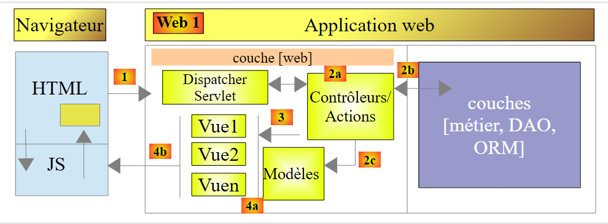
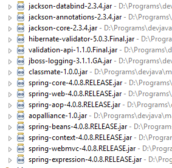
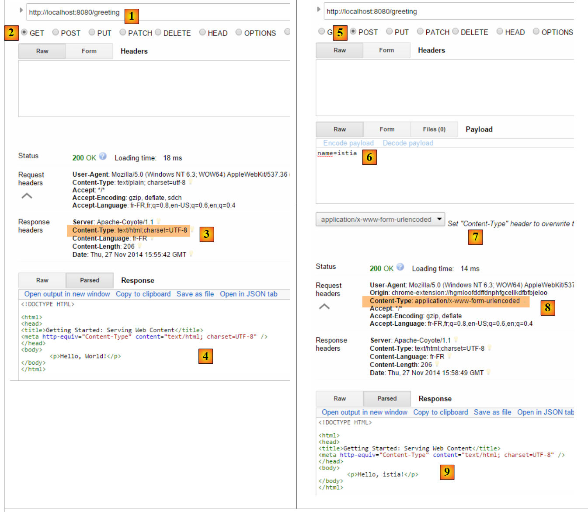
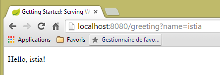
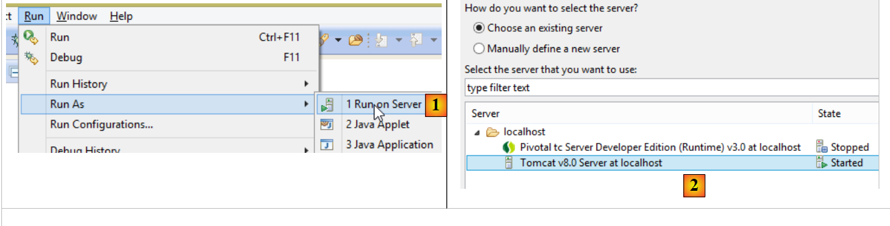
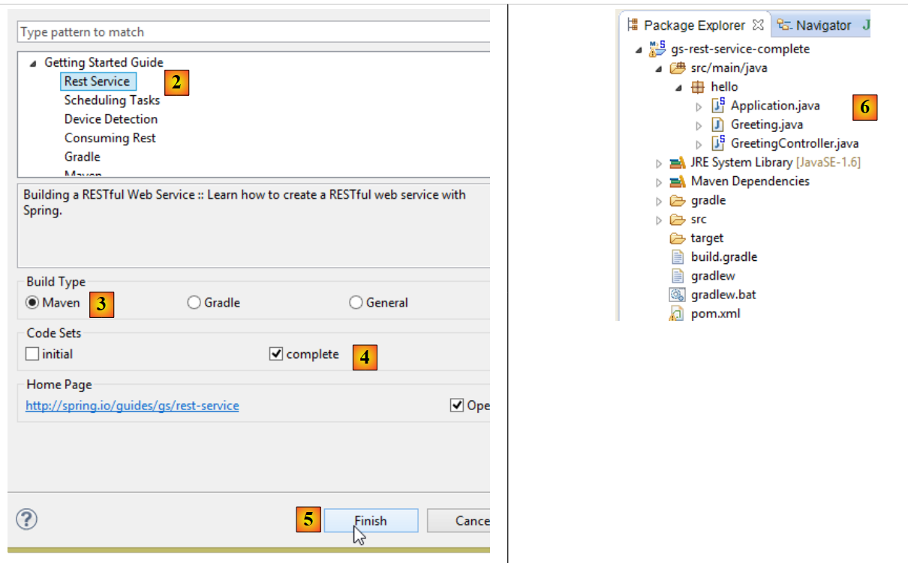
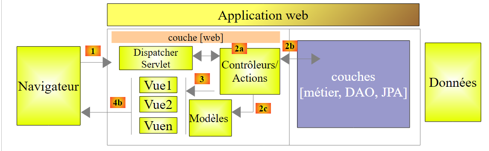

1. Introduction
The PDF for this document is available |HERE|.
The examples in this document are available |HERE|.
Here, we aim to introduce, through examples, the key concepts of Spring MVC, a Java web framework that provides a framework for developing web applications according to the MVC model (Model–View–Controller). Spring MVC is a branch of the Spring [http://projects.spring.io/spring-framework/] ecosystem. We also present the Thymeleaf [http://www.thymeleaf.org/] view engine.
This course is intended for readers with a solid command of the Java language. No prior knowledge of web programming is required.
Although detailed, this document is likely incomplete. Spring is a vast framework with numerous branches. To learn more about Spring MVC, you can consult the following references:
- the Spring framework reference document [http://docs.spring.io/spring/docs/current/spring-framework-reference/pdf/spring-framework-reference.pdf];
- numerous Spring tutorials can be found at the URL [http://spring.io/guides]
- the [developpez.com] website dedicated to Spring [http://spring.developpez.com/].
This document has been written so that it can be read without a computer at hand. Therefore, many screenshots are included.
1.1. Sources
This document has two main sources:
- [Introduction to the ASP.NET MVC Framework through Examples (2013)]. Spring MVC and ASP.NET MVC are two similar frameworks, the second having been built well after the first. In order to compare the two frameworks, I followed the same structure as in the document on ASP.NET and MVC;
- the document on ASP.NET MVC does not currently (Dec 2014) contain a case study with its solution. I have included here the one from the document [A Client/Server Example - AngularJS 1.x / Spring 4 (2014)], which I have modified as follows:
- The case study in [Tutoriel AngularJS / Spring 4] is that of a client/server application where the server is a web service / jSON built with Spring MVC and the client is a AngularJS client;
- In this document, we use the same web service / jSON, but the client is a two-tier web application / [client jQuery] / [service web / jSON];
In addition to these sources, I searched the Internet for answers to my questions. The [http://stackoverflow.com/] website was particularly helpful to me.
1.2. Tools Used
The following examples were tested in the following environment:
- Windows 8.1 Pro 64-bit machine;
- JDK 1.8;
- IDE Spring Tool Suite 3.6.3 (see section 9.3);
- Chrome browser (other browsers were not used);
- Chrome extension [Advanced Rest Client] (see section 9.6);
Note regarding JDK 1.8. One of the methods in the case study uses a method from the [java.lang] package in Java 8.
All examples are Maven projects that can be opened using any of the Eclipse versions IDE, IntellijIDEA, or Netbeans. In the following, the screenshots are from the IDE Spring Tool Suite, a variant of Eclipse.
1.3. The examples
The examples are available |HERE| as a downloadable ZIP file.
 |
To load all projects into STS, proceed as follows:
 |
 |
- In [1-3], import Maven projects;
 |
- In [4], specify the examples folder;
- In [5], select all projects in the folder;
- In [6], click OK;
- in [7], the imported projects;
1.4. The Role of Spring MVC in a Web Application
Let’s place Spring MVC within the development of a web application. Most often, this will be built on a multi-tier architecture such as the following:
 |
- The [Web] layer is the layer in contact with the web application user. The user interacts with the web application through web pages displayed by a browser. It is in this layer that Spring MVC is located, and only in this layer;
- The [métier] layer implements the application’s business logic, such as calculating a salary or an invoice. This layer uses data from the user via the [Web] layer and from SGBD via the [DAO] layer;
- the [DAO] layer (Data Access Objects), the [ORM] layer (Object Relational Mapper) and the JDBC driver manage access to the data in SGBD. The [ORM] layer bridges the objects handled by the [DAO] layer and the rows and columns of tables in a relational database. Here, we will use the ORM Hibernate. A specification called JPA (Java Persistence API) allows for abstraction from the ORM being used if it implements these specifications. This is the case for Hibernate and other Java ORM implementations. We will therefore henceforth refer to the ORM layer as the JPA layer;
- the integration of the layers is handled by the Spring framework;
Most of the examples provided below will use only a single layer, the [Web] layer:
 |
However, this document will conclude with the construction of a multi-tier web application:
 |
The browser will connect to a [Web1] application implemented by Spring MVC / Thymeleaf that will retrieve its data from a web service [Web2], also implemented with Spring MVC. This second web application will access a database.
1.5. The Spring development model MVC
Spring MVC implements the so-called MVC architecture model (Model–View–Controller) as follows:
 |
The processing of a client request proceeds as follows:
- request - the requested URLs are of the form http://machine:port/context/Action/param1/param2/....?p1=v1&p2=v2&... The [Front Controller] uses a configuration file or Java annotations to "route" the request to the correct controller and the correct action within that controller. To do this, it uses the [Action] field of the URL. The rest of the URL [/param1/param2/...] consists of optional parameters that will be passed to the action. The C in MVC is the string [Front Controller, Contrôleur, Action]. If no controller can handle the requested action, the web server will respond that the requested URL was not found.
- processing
- The selected action can use the parameters that [Front Controller] passed to it. These may come from several sources:
- the [/param1/param2/...] path of the URL,
- the [p1=v1&p2=v2] parameters from the URL,
- from parameters posted by the browser with its request;
- when processing the user's request, the action may require the [métier] and [2b] layers. Once the client's request has been processed, it may trigger various responses. A classic example is:
- an error page if the request could not be processed correctly
- a confirmation page otherwise
- the action instructs a specific view to be displayed [3]. This view will display data known as the view model. This is the M in MVC. The action will create this model M [2c] and request that a view V be displayed [3];
- response—the selected view V uses the model M constructed by the action to initialize the dynamic parts of the response HTML that it must send to the client, then sends this response.
Now, let’s clarify the relationship between web architecture MVC and layered architecture. Depending on how we define the model, these two concepts may or may not be related. Let’s consider a single-layer Spring web application MVC:
 |
If we implement the [Web] layer with Spring MVC, we will indeed have a MVC web architecture but not a multi-layer architecture. Here, the [web] layer will handle everything: presentation, business logic, and data access. These are the actions that will perform this work.
Now, let’s consider a multi-layer web architecture:
 |
The [Web] layer can be implemented without a framework and without following the MVC model. We then indeed have a multi-layer architecture, but the web layer does not implement the MVC model.
For example, in the .NET world, the [Web] layercan be implemented with ASP.NET and MVC, resulting in a layered architecture with a [Web] layer of the type MVC. Once this is done, we can replace this ASP.NET MVC layer with a standard ASP.NET layer (WebForms) while keeping the rest (business logic, DAO, ORM) unchanged. We then have a layered architecture with a [Web] layer that is no longer of type MVC.
In MVC, we stated that the M model was that of the V view, c.a.d—the set of data displayed by the V view. Another definition of the M model of MVC is provided:
 |
Many authors consider that what is to the right of the layer [Web] forms the model M of MVC. To avoid ambiguities, we can refer to:
- the domain model when referring to everything to the right of the [Web] layer
- the view model when referring to the data displayed by a view V
Hereinafter, the term "M model" will refer exclusively to the model of a view V.
1.6. A First Spring Project MVC
From now on, we will be working with the Spring Tool Suite (STS), a version of Eclipse customized for Spring. The website offers getting-started tutorials to help you explore the Spring ecosystem. We will follow one of them to discover the Maven configuration required for a Spring project MVC.
Note: Most beginners will not fully grasp the project details. This is not important. These details are explained later in this document. We will simply follow the steps.
1.6.1. The demo project
 |
- In [1], we import one of the Spring guides;
 |
- in [2], we select the example [Serving Web Content];
- in [3], we select the Maven project;
- in [4], we take the final version from the guide;
- in [5], we validate;
- in [6], the imported project;
Let’s examine the project, starting with its Maven configuration.
1.6.2. Maven Configuration
The [pom.xml] file is as follows:
<?xml version="1.0" encoding="UTF-8"?>
<project xmlns="http://maven.apache.org/POM/4.0.0" xmlns:xsi="http://www.w3.org/2001/XMLSchema-instance"
xsi:schemaLocation="http://maven.apache.org/POM/4.0.0 http://maven.apache.org/xsd/maven-4.0.0.xsd">
<modelVersion>4.0.0</modelVersion>
<groupId>org.springframework</groupId>
<artifactId>gs-serving-web-content</artifactId>
<version>0.1.0</version>
<parent>
<groupId>org.springframework.boot</groupId>
<artifactId>spring-boot-starter-parent</artifactId>
<version>1.1.9.RELEASE</version>
</parent>
<dependencies>
<dependency>
<groupId>org.springframework.boot</groupId>
<artifactId>spring-boot-starter-thymeleaf</artifactId>
</dependency>
</dependencies>
<properties>
<start-class>hello.Application</start-class>
</properties>
<build>
<plugins>
<plugin>
<groupId>org.springframework.boot</groupId>
<artifactId>spring-boot-maven-plugin</artifactId>
</plugin>
</plugins>
</build>
<repositories>
<repository>
<id>spring-milestone</id>
<url>https://repo.spring.io/libs-release</url>
</repository>
</repositories>
<pluginRepositories>
<pluginRepository>
<id>spring-milestone</id>
<url>https://repo.spring.io/libs-release</url>
</pluginRepository>
</pluginRepositories>
</project>
- Lines 6–8: the Maven project properties. A [<packaging>] tag specifying the type of file produced by the Maven build is missing. In its absence, the [jar] type is used. The application is therefore a console-based executable application, not a web application, for which the packaging would be [war];
- lines 10–14: the Maven project has a parent project [spring-boot-starter-parent]. This defines most of the project’s dependencies. They may be sufficient, in which case no additional dependencies are added, or they may not be, in which case the missing dependencies are added;
- lines 17–20: the artifact [spring-boot-starter-thymeleaf] includes the libraries required for a Spring project MVC used in conjunction with a view engine called [Thymeleaf]. This artifact includes a very large number of libraries, including those for an embedded Tomcat server. The application will run on this server;
The libraries included in this configuration are numerous:
 |  |
Above, we see the Tomcat server archives.
Spring Boot is a branch of the Spring ecosystem [http://projects.spring.io/spring-boot/]. This project aims to minimize the configuration required for Spring projects. To achieve this, Spring Boot performs auto-configuration based on the dependencies present in the project’s classpath. Spring Boot provides many ready-to-use dependencies. Thus, the [spring-boot-starter-thymeleaf] dependency found in the previous Maven project brings all the dependencies necessary for a Spring MVC application using the [Thymeleaf] view engine. With these two features:
- ready-to-use dependencies;
- auto-configuration based on these dependencies and "reasonable" default values, you can very quickly have a Spring application MVC up and running. This is the case for the project studied here;
1.6.3. The architecture of a Spring MVC application
Spring MVC implements the so-called MVC architectural model (Model–View–Controller):
 |
The processing of a client request proceeds as follows:
- request - the requested URLs are of the form http://machine:port/context/Action/param1/param2/....?p1=v1&p2=v2&... [Dispatcher Servlet] is the Spring class that processes incoming URL requests. It "routes" the URL to the action that must process it. These actions are methods of specific classes called [Contrôleurs]. The C in MVC is here the string [Dispatcher Servlet, Contrôleur, Action]. If no action has been configured to handle the incoming URL, the [Dispatcher Servlet] servlet will respond that the requested URL was not found (404 error NOT FOUND);
- processing
- the selected action can use the parami parameters that the [Dispatcher Servlet] servlet passed to it. These may come from several sources:
- the path [/param1/param2/...] of the URL,
- the [p1=v1&p2=v2] parameters of the URL,
- from parameters posted by the browser with its request;
- when processing the user’s request, the action may require the [metier] and [2b] layers. Once the client’s request has been processed, it may trigger various responses. A classic example is:
- an error page if the request could not be processed correctly
- a confirmation page otherwise
- the action instructs a specific view to be displayed [3]. This view will display data known as the view model. This is the M in MVC. The action will create this model M [2c] and request that a view V be displayed [3];
- Response - The selected view V uses the model M created by the action to initialize the dynamic parts of the response HTML that it must send to the client, and then sends this response.
We will examine these different elements in the project under study.
1.6.4. The C controller
 |
The imported application has the following controller:
package hello;
import org.springframework.stereotype.Controller;
import org.springframework.ui.Model;
import org.springframework.web.bind.annotation.RequestMapping;
import org.springframework.web.bind.annotation.RequestParam;
@Controller
public class GreetingController {
@RequestMapping("/greeting")
public String greeting(@RequestParam(value="name", required=false, defaultValue="World") String name, Model model) {
model.addAttribute("name", name);
return "greeting";
}
}
- line 8: the [@Controller] annotation makes the [GreetingController] class a Spring controller, meaning that its methods are registered to handle URL. A Spring controller is a singleton. Only a single instance of it is created;
- Line 11: The [@RequestMapping] annotation specifies the URL that the method handles, in this case the URL [/greeting]. We will see later that this URL can be configured and that it is possible to retrieve these parameters;
- line 12: the method accepts two parameters:
- [String name]: this parameter is initialized by a parameter named [name] in the processed request, for example [/greeting?name=alfonse]. This parameter is optional ([required=false]), and when it is not present, the parameter [name] will take the value 'World' ([defaultValue="World"]),
- [Model model] is a view model. It is passed in empty, and it is the action’s (the greeting method’s) role to populate it. This model is what will be passed to the view that the action will render. It is therefore a view model;
- line 13: the value of [name] is placed in the view model. The [Model] class behaves like a dictionary;
- line 14: the method returns the name of the view that must display the constructed model. The exact name of the view depends on the configuration of [Thymeleaf]. In the absence of such a configuration, the view displayed here will be the [/templates/greeting.html] view, or the [templates] folder must be at the root of the project’s classpath;
Let’s examine our Eclipse project:
 |
The [src/main/java] and [src/main/resources] folders are both folders whose contents will be placed in the project’s Classpath. For [src/main/java], the compiled versions of the Java sources will be placed there. The contents of the [src/main/resources] folder are placed in the classpath without modification. We can therefore see that the [templates] folder will be in the classpath of the [1] project.
This can be verified in the [2-3] window within the [Navigator] window of Eclipse [Window / Show view / Other / General / Navigator]. The [target] folder is generated by the compilation (called a build) of the project. The [classes] folder represents the root of the Classpath. We can see that the [templates] folder is present there.
1.6.5. The View V
In MVC, we just saw the C controller and the M view model. The V view is represented here by the following [greeting.html] file:
<!DOCTYPE HTML>
<html xmlns:th="http://www.thymeleaf.org">
<head>
<title>Getting Started: Serving Web Content</title>
<meta http-equiv="Content-Type" content="text/html; charset=UTF-8" />
</head>
<body>
<p th:text="'Hello, ' + ${name} + '!'" />
</body>
</html>
- line 2: the Thymeleaf tag namespace;
- line 8: a <p> tag (paragraph) with a Thymeleaf attribute. The attribute [th:text] sets the content of the paragraph. Inside the string, we have the expression [${name}]. This means we want the value of the [name] attribute from the view template. However, we recall that this attribute was added to the template by the action:
model.addAttribute("name", name);
The first parameter sets the attribute name, the second its value.
1.6.6. Execution
 |
The [Application.java] class is the project’s executable class. Its code is as follows:
package hello;
import org.springframework.boot.autoconfigure.EnableAutoConfiguration;
import org.springframework.boot.SpringApplication;
import org.springframework.context.annotation.ComponentScan;
@ComponentScan
@EnableAutoConfiguration
public class Application {
public static void main(String[] args) {
SpringApplication.run(Application.class, args);
}
}
- line 11: the class is executable using a [main] method specific to console applications. The [SpringApplication] class on line 12 will start the Tomcat server present in the dependencies and deploy the web service to it;
- line 4: we see that the [SpringApplication] class belongs to the [Spring Boot] project;
- line 12: the first parameter is the class that configures the project, the second is for any additional parameters;
- line 8: the [@EnableAutoConfiguration] annotation instructs Spring Boot to configure the project;
- line 7: the annotation [@ComponentScan] causes the directory containing the class [Application] to be scanned for Spring components. One will be found: the [GreetingController] class, which has the [@Controller] annotation that makes it a Spring component;
Let’s run the project:
 |
We get the following console logs:
- line 13: the Tomcat server starts on port 8080 (line 12);
- line 17: the [DispatcherServlet] servlet is present;
- line 20: the [hello.GreetingController.greeting] method has been discovered, as well as the URL method that it processes, [/greeting];
To test the web application, we request URL and [http://localhost:8080/greeting]:
 |  |
It may be interesting to view the headers sent by the server. To do this, we will use the Chrome plugin called [Advanced Rest Client] (see section 9.6):
 |
- in [1], the requested URL;
- in [2], the GET method is used;
- in [3], the server indicated that it was sending a response in the HTML format;
- in [4], the response is HTML;
- in [5], the same URL is requested, but this time with a POST;
- in [7], the information is sent to the server in the form [urlencoded];
- in [6], the parameter name with its value;
- in [8], the browser tells the server that it is sending it information [urlencoded];
- in [9], the server's response HTML;
To stop the application:
 |  |  |
1.6.7. Creating an executable archive
It is possible to create an executable archive outside of Eclipse. The necessary configuration is in the file [pom.xml]:
<properties>
<start-class>hello.Application</start-class>
</properties>
<build>
<plugins>
<plugin>
<groupId>org.springframework.boot</groupId>
<artifactId>spring-boot-maven-plugin</artifactId>
</plugin>
</plugins>
</build>
- Lines 7–10 define the plugin that will create the executable archive;
- Line 2 defines the project's executable class;
Here’s how to proceed:
 |
- in [1]: we execute a Maven target;
 |
- in [2]: there are two goals: [clean] to delete the [target] folder from the Maven project, and [package] to regenerate it;
- in [3]: the generated [target] folder will be created in this folder;
- to [4]: the target is generated;
Note: For the generation to succeed, the JVM used by STS must be a JDK or [Window / Preferences / Java / Installed JREs]:
 |
In the logs displayed in the console, it is important to see the [spring-boot-maven-plugin] plugin appear. This is the plugin that generates the executable archive.
Using a console, navigate to the generated folder:
gs-serving-web-content-complete\target>dir
...
Répertoire de D:\data\istia-1415\spring mvc\dvp\gs-serving-web-content-complete
\target
27/11/2014 17:07 <DIR> .
27/11/2014 17:07 <DIR> ..
27/11/2014 17:07 <DIR> classes
27/11/2014 17:07 <DIR> generated-sources
27/11/2014 17:07 13 419 551 gs-serving-web-content-0.1.0.jar
27/11/2014 17:07 3 522 gs-serving-web-content-0.1.0.jar.original
27/11/2014 17:07 <DIR> maven-archiver
27/11/2014 17:07 <DIR> maven-status
- line 12: the generated archive;
This archive is executed as follows:
gs-serving-web-content-complete\target>java -jar gs-serving-web-content-0.1.0.jar
. ____ _ __ _ _
/\\ / ___'_ __ _ _(_)_ __ __ _ \ \ \ \
( ( )\___ | '_ | '_| | '_ \/ _` | \ \ \ \
\\/ ___)| |_)| | | | | || (_| | ) ) ) )
' |____| .__|_| |_|_| |_\__, | / / / /
=========|_|==============|___/=/_/_/_/
:: Spring Boot :: (v1.1.9.RELEASE)
2014-11-27 17:14:50.439 INFO 8172 --- [ main] hello.Application : Starting Application on Gportpers3 with PID 8172 (D:\data\istia-1415\spring mvc\dvp\gs-serving-web-content-complete\target\gs-serving-web-content-0.1.0.jar started by ST in D:\data\istia-1415\spring mvc\dvp\gs-serving-web-content-complete\target)
2014-11-27 17:14:50.491 INFO 8172 --- [ main] ationConfigEmbeddedWebApplicationContext : Refreshing org.springframework.boot.context.embedded.AnnotationConfigEmbeddedWebApplicationContext@12f4ec3a: startup date [Thu Nov 27 17:14:50 CET 2014]; root of context hierarchy
Note: You must first stop any web service that may have been launched in Eclipse (see page 17).
Now that the web application is running, you can access it using a browser:
 |
1.6.8. Deploying the application to a Tomcat server
While Spring Boot is very convenient in development mode, a production application will be deployed on a real Tomcat server. Here’s how to proceed:
Modify the [pom.xml] file as follows:
<?xml version="1.0" encoding="UTF-8"?>
<project xmlns="http://maven.apache.org/POM/4.0.0" xmlns:xsi="http://www.w3.org/2001/XMLSchema-instance"
xsi:schemaLocation="http://maven.apache.org/POM/4.0.0 http://maven.apache.org/xsd/maven-4.0.0.xsd">
<modelVersion>4.0.0</modelVersion>
<groupId>org.springframework</groupId>
<artifactId>gs-serving-web-content</artifactId>
<version>0.1.0</version>
<packaging>war</packaging>
<parent>
<groupId>org.springframework.boot</groupId>
<artifactId>spring-boot-starter-parent</artifactId>
<version>1.1.9.RELEASE</version>
</parent>
<dependencies>
<!-- thymeleaf environment -->
<dependency>
<groupId>org.springframework.boot</groupId>
<artifactId>spring-boot-starter-thymeleaf</artifactId>
</dependency>
<!-- war generation -->
<!-- <dependency>
<groupId>org.springframework.boot</groupId>
<artifactId>spring-boot-starter-tomcat</artifactId>
<scope>provided</scope>
</dependency> -->
</dependencies>
<properties>
<start-class>hello.Application</start-class>
</properties>
<build>
<plugins>
<plugin>
<groupId>org.springframework.boot</groupId>
<artifactId>spring-boot-maven-plugin</artifactId>
</plugin>
</plugins>
</build>
<repositories>
<repository>
<id>spring-milestone</id>
<url>https://repo.spring.io/libs-release</url>
</repository>
</repositories>
<pluginRepositories>
<pluginRepository>
<id>spring-milestone</id>
<url>https://repo.spring.io/libs-release</url>
</pluginRepository>
</pluginRepositories>
</project>
Changes must be made in two places:
- line 9: you must specify that you are going to generate a WAR archive (Web ARchive);
- lines 24–28: you must add a dependency on the artifact [spring-boot-starter-tomcat]. This artifact includes all Tomcat classes in the project’s dependencies;
- line 27: this artifact is [provided], meaning that the corresponding archives will not be included in the generated WAR. Instead, these archives will be located on the Tomcat server where the application will run;
In fact, if we look at the project’s current dependencies, we see that the [spring-boot-starter-tomcat] dependency is already present:
 |
There is therefore no need to add it to the [pom.xml] file. We have commented it out for reference.
The web application must also be configured. In the absence of the [web.xml] file, this is done using a class that inherits from [SpringBootServletInitializer]:
 |
The [ApplicationInitializer] class is as follows:
package hello;
import org.springframework.boot.builder.SpringApplicationBuilder;
import org.springframework.boot.context.web.SpringBootServletInitializer;
public class ApplicationInitializer extends SpringBootServletInitializer {
@Override
protected SpringApplicationBuilder configure(SpringApplicationBuilder application) {
return application.sources(Application.class);
}
}
- line 6: the class [ApplicationInitializer] extends the class [SpringBootServletInitializer];
- line 9: the [configure] method is redefined (line 8);
- line 10: the class that configures the project is provided;
To run the project, proceed as follows:
 |
- in [1], run the project on one of the servers registered in the IDE Eclipse;
- In [2], select [Tomcat v8.0] from the list above;
Once this is done, you can request URL [http://localhost:8080/gs-rest-service/greeting/?name=Mitchell] in a browser:
 |
Note: depending on the versions of [tomcat] and [tc Server Developer], this operation may fail. This was the case with [Apache Tomcat 8.0.3 et 8.0.15], for example. Above, the version used by Tomcat was [8.0.9].
We now know how to generate a WAR archive. Moving forward, we will continue working with Spring Boot and its executable jar archive.
1.7. A second Spring project MVC
1.7.1. The demo project
 |
- in [1], we import one of the Spring guides;
 |
- in [2], we select the example [Rest Service];
- in [3], we select the Maven project;
- in [4], we take the final version from the guide;
- in [5], we validate;
- in [6], the imported project;
Web services accessible via standard URL and that deliver text jSON are often called REST services (REpresentational State Transfer). In this document, I will simply refer to the service we are going to build as a web service / jSON. A service is considered RESTful if it adheres to certain rules. I have not attempted to adhere to these rules.
Let’s now examine the imported project, starting with its Maven configuration.
1.7.2. Maven Configuration
The [pom.xml] file is as follows:
<?xml version="1.0" encoding="UTF-8"?>
<project xmlns="http://maven.apache.org/POM/4.0.0" xmlns:xsi="http://www.w3.org/2001/XMLSchema-instance"
xsi:schemaLocation="http://maven.apache.org/POM/4.0.0 http://maven.apache.org/xsd/maven-4.0.0.xsd">
<modelVersion>4.0.0</modelVersion>
<groupId>org.springframework</groupId>
<artifactId>gs-rest-service</artifactId>
<version>0.1.0</version>
<parent>
<groupId>org.springframework.boot</groupId>
<artifactId>spring-boot-starter-parent</artifactId>
<version>1.1.9.RELEASE</version>
</parent>
<dependencies>
<dependency>
<groupId>org.springframework.boot</groupId>
<artifactId>spring-boot-starter-web</artifactId>
</dependency>
</dependencies>
<properties>
<start-class>hello.Application</start-class>
</properties>
<build>
<plugins>
<plugin>
<groupId>org.springframework.boot</groupId>
<artifactId>spring-boot-maven-plugin</artifactId>
</plugin>
</plugins>
</build>
<repositories>
<repository>
<id>spring-releases</id>
<url>https://repo.spring.io/libs-release</url>
</repository>
</repositories>
<pluginRepositories>
<pluginRepository>
<id>spring-releases</id>
<url>https://repo.spring.io/libs-release</url>
</pluginRepository>
</pluginRepositories>
</project>
- Lines 6–8: the Maven project properties. A [<packaging>] tag specifying the type of file produced by the Maven build is missing. In its absence, the [jar] type is used. The application is therefore a console-based executable application, not a web application, in which case the packaging would be [war];
- lines 10–14: the Maven project has a parent project [spring-boot-starter-parent]. This defines most of the project’s dependencies. They may be sufficient, in which case no additional dependencies are added, or they may not be, in which case the missing dependencies are added;
- lines 17–20: the artifact [spring-boot-starter-web] includes the libraries required for a Spring project MVC of the web service type, where no views are generated. This artifact includes a very large number of libraries, including those for an embedded Tomcat server. The application will run on this server;
The libraries included in this configuration are numerous:
 |  |
Above, we see the three Tomcat server archives.
1.7.3. The architecture of a Spring [web / jSON] service
Let’s review how Spring MVC implements the MVC model:
 |
The processing of a client request proceeds as follows:
- request - the requested URL requests are of the form http://machine:port/context/Action/param1/param2/....?p1=v1&p2=v2&... [Dispatcher Servlet] is the Spring class that processes incoming URL requests. It "routes" the URL to the action that must process it. These actions are methods of specific classes called [Contrôleurs]. The C in MVC is here the string [Dispatcher Servlet, Contrôleur, Action]. If no action has been configured to handle the incoming URL, the [Dispatcher Servlet] servlet will respond that the requested URL was not found (404 error NOT FOUND);
- processing
- the selected action can use the parami parameters that the [Dispatcher Servlet] servlet passed to it. These may come from several sources:
- the [/param1/param2/...] path of the URL,
- the [p1=v1&p2=v2] parameters of the URL,
- from parameters posted by the browser with its request;
- when processing the user's request, the action may require the [metier] and [2b] layers. Once the client's request has been processed, it may trigger various responses. A classic example is:
- an error page if the request could not be processed correctly
- a confirmation page otherwise
- the action instructs a specific view to be displayed [3]. This view will display data known as the view model. This is the M in MVC. The action will create this model M [2c] and request that a view V be displayed [3];
- response—the selected view V uses the model M constructed by the action to initialize the dynamic parts of the response HTML that it must send to the client, then sends this response.
For a web service / jSON, the previous architecture is slightly modified:
 |
- in [4a], the model, which is a Java class, is converted into a string jSON by a library jSON;
- in [4b], this string jSON is sent to the browser;
1.7.4. The C controller
 |
The imported application has the following controller:
package hello;
import java.util.concurrent.atomic.AtomicLong;
import org.springframework.web.bind.annotation.RequestMapping;
import org.springframework.web.bind.annotation.RequestParam;
import org.springframework.web.bind.annotation.RestController;
@RestController
public class GreetingController {
private static final String template = "Hello, %s!";
private final AtomicLong counter = new AtomicLong();
@RequestMapping("/greeting")
public Greeting greeting(@RequestParam(value = "name", defaultValue = "World") String name) {
return new Greeting(counter.incrementAndGet(), String.format(template, name));
}
}
- line 9: the annotation [@RestController] makes the class [GreetingController] a Spring controller, i.e., its methods are registered to handle URL. We have seen the similar annotation [@Controller]. The result of this controller’s methods was a [String] type, which was the name of the view to be displayed. Here it is different. The methods of a controller of type [@RestController] return objects that are serialized to be sent to the browser. The type of serialization performed depends on the Spring configuration MVC. Here, they will be serialized as jSON. The presence of a jSON library in the project dependencies causes Spring Boot to automatically configure the project in this way;
- line 14: the [@RequestMapping] annotation indicates the URL that the method processes, in this case the URL [/greeting];
- line 15: we have already explained the annotation [@RequestParam]. The result returned by the method is an object of type [Greeting].
- line 12: an atomic integer of type long. This means it supports concurrent access. Multiple threads may want to increment the variable [counter] at the same time. This will be handled correctly. A thread can only read the counter’s value once the thread currently modifying it has finished its modification.
1.7.5. The M model
The M model produced by the previous method is the following [Greeting] object:
 |
package hello;
public class Greeting {
private final long id;
private final String content;
public Greeting(long id, String content) {
this.id = id;
this.content = content;
}
public long getId() {
return id;
}
public String getContent() {
return content;
}
}
The jSON transformation of this object will create the string {"id":n,"content":"text"}. Ultimately, the jSON string produced by the controller method will be in the form:
{"id":2,"content":"Hello, World!"}
or
{"id":2,"content":"Hello, John!"}
1.7.6. Execution
 |
The [Application.java] class is the project's executable class. Its code is as follows:
package hello;
import org.springframework.boot.autoconfigure.EnableAutoConfiguration;
import org.springframework.boot.SpringApplication;
import org.springframework.context.annotation.ComponentScan;
@ComponentScan
@EnableAutoConfiguration
public class Application {
public static void main(String[] args) {
SpringApplication.run(Application.class, args);
}
}
We have already encountered and explained this code in the previous example.
1.7.7. Running the project
Let’s run the project:
|
We get the following console logs:
- line 13: the Tomcat server starts on port 8080 (line 12);
- line 17: the [DispatcherServlet] servlet is present;
- line 20: the [GreetingController.greeting] method has been discovered;
To test the web application, we request URL [http://localhost:8080/greeting]:
 |  |
We receive the expected string jSON.
Note: this example did not work with Eclipse’s built-in browser.
It may be interesting to view the headers sent by the server. To do this, we will use the Chrome plugin called [Advanced Rest Client] (see Appendices, section 9.6):
 |
- in [1], the requested URL;
- in [2], the GET method is used;
- in [3], the response jSON;
- in [4], the server indicated that it was sending a response in the jSON format;
- in [5], the same URL is requested, but this time with a POST;
- in [7], the information is sent to the server in the form [urlencoded];
- in [6], the parameter name with its value;
- in [8], the browser tells the server that it is sending it information [urlencoded];
- in [9], the server's response jSON;
1.7.8. Creating an executable archive
As we did for the previous project, we create an executable archive:
 |
 |
- in [1]: we execute a Maven target;
- in [2]: there are two goals: [clean] to delete the [target] folder from the Maven project, [package] to regenerate it;
- in [3]: the generated [target] folder will be created in this folder;
- in [4]: the target is generated;
In the logs that appear in the console, it is important to see the [spring-boot-maven-plugin] plugin appear. This is the one that generates the executable archive.
Using a console, navigate to the generated folder:
D:\Temp\wksSTS\gs-rest-service\target>dir
...
11/06/2014 15:30 <DIR> classes
11/06/2014 15:30 <DIR> generated-sources
11/06/2014 15:30 11 073 572 gs-rest-service-0.1.0.jar
11/06/2014 15:30 3 690 gs-rest-service-0.1.0.jar.original
11/06/2014 15:30 <DIR> maven-archiver
11/06/2014 15:30 <DIR> maven-status
...
- line 5: the generated archive;
This archive is executed as follows:
D:\Temp\wksSTS\gs-rest-service-complete\target>java -jar gs-rest-service-0.1.0.jar
. ____ _ __ _ _
/\\ / ___'_ __ _ _(_)_ __ __ _ \ \ \ \
( ( )\___ | '_ | '_| | '_ \/ _` | \ \ \ \
\\/ ___)| |_)| | | | | || (_| | ) ) ) )
' |____| .__|_| |_|_| |_\__, | / / / /
=========|_|==============|___/=/_/_/_/
:: Spring Boot :: (v1.1.0.RELEASE)
2014-06-11 15:32:47.088 INFO 4972 --- [ main] hello.Application
: Starting Application on Gportpers3 with PID 4972 (D:\Temp\wk
sSTS\gs-rest-service-complete\target\gs-rest-service-0.1.0.jar started by ST in
D:\Temp\wksSTS\gs-rest-service-complete\target)
...
Note: You must first stop any web service that may have been launched in Eclipse (see section 1.6.6).
Now that the web application is running, you can access it using a browser:
 |
1.7.9. Deploy the application to a Tomcat server
As we did for the previous project, we modify the [pom.xml] file as follows:
<?xml version="1.0" encoding="UTF-8"?>
<project xmlns="http://maven.apache.org/POM/4.0.0" xmlns:xsi="http://www.w3.org/2001/XMLSchema-instance"
xsi:schemaLocation="http://maven.apache.org/POM/4.0.0 http://maven.apache.org/xsd/maven-4.0.0.xsd">
<modelVersion>4.0.0</modelVersion>
<groupId>org.springframework</groupId>
<artifactId>gs-rest-service</artifactId>
<version>0.1.0</version>
<packaging>war</packaging>
...
</project>
- Line 9: You must specify that you are going to generate a WAR archive (Web ARchive);
You must also configure the web application. If the [web.xml] file is missing, this is done using a class that inherits from [SpringBootServletInitializer]:
 |
The [ApplicationInitializer] class is as follows:
package hello;
import org.springframework.boot.builder.SpringApplicationBuilder;
import org.springframework.boot.context.web.SpringBootServletInitializer;
public class ApplicationInitializer extends SpringBootServletInitializer {
@Override
protected SpringApplicationBuilder configure(SpringApplicationBuilder application) {
return application.sources(Application.class);
}
}
- line 6: the class [ApplicationInitializer] extends the class [SpringBootServletInitializer];
- line 9: the [configure] method is redefined (line 8);
- line 10: the class that configures the project is provided;
To run the project, proceed as follows:
 |
- in [1-2], run the project on one of the servers registered in the IDE Eclipse;
Once this is done, you can request the URL [http://localhost:8080/gs-rest-service/greeting/?name=Mitchell] in a browser:
|
1.8. Conclusion
We have introduced two types of Spring projects:
- a project where the web application sends a HTML stream to the browser. This stream is generated by the [Thymeleaf] view engine;
- a project where the web application sends a jSON stream to the browser;
In the first case, the project requires two Maven dependencies:
<parent>
<groupId>org.springframework.boot</groupId>
<artifactId>spring-boot-starter-parent</artifactId>
<version>1.1.9.RELEASE</version>
</parent>
<dependencies>
<dependency>
<groupId>org.springframework.boot</groupId>
<artifactId>spring-boot-starter-thymeleaf</artifactId>
</dependency>
</dependencies>
In the second case, the Maven dependencies are as follows:
<parent>
<groupId>org.springframework.boot</groupId>
<artifactId>spring-boot-starter-parent</artifactId>
<version>1.1.9.RELEASE</version>
</parent>
<dependencies>
<dependency>
<groupId>org.springframework.boot</groupId>
<artifactId>spring-boot-starter-web</artifactId>
</dependency>
</dependencies>
The dependencies introduced by these configurations are numerous, and many are unnecessary. For deploying the application, we will use a manual Maven configuration that includes only the dependencies necessary for the project.
We will now return to the basics of web programming by introducing two fundamental concepts:
- the HTTP (HyperText Transfer Protocol) communication between a browser and a web application;
- the HTML (HyperText Markup Language) that the browser interprets to display a page it has received;